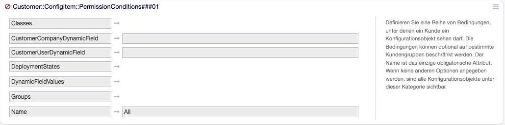

Berechtigungen¶
Wer in der CMDB was sehen und ändern darf, regeln in OTOBO zwei voneinander unabhängige Ebenen. Ein Agent kommt nur dann an ein Config Item heran, wenn beide es erlauben:
Ebene 1: Zugang zu den Masken |
Ebene 2: Zugang zur Klasse |
|
|---|---|---|
Frage |
Darf der Agent die CMDB-Masken überhaupt öffnen? |
Darf der Agent Config Items dieser Klasse sehen oder ändern? |
Gruppe |
|
Berechtigungsgruppe der Klasse (frei wählbar) |
Gepflegt in |
Modulregistrierung in der Systemkonfiguration |
Admin → General Catalog → ITSM::ConfigItem::Class |
Für beide Ebenen gilt das übliche Gruppenmodell von OTOBO: Rechte können direkt oder über Rollen vergeben werden, und wer das Recht rw hat, hat automatisch auch ro.
Ebene 1: die Gruppe itsm-configitem¶
Die Installation legt die Gruppe itsm-configitem an und nimmt den
Benutzer root@localhost mit allen Rechten auf. Jede CMDB-Maske verlangt in dieser
Gruppe ein bestimmtes Recht:
Maske |
Recht |
Modul |
|---|---|---|
Übersicht |
ro |
|
Detailansicht |
ro |
|
Suche |
ro |
|
Historie |
ro |
|
ro |
|
|
Anhänge herunterladen |
ro |
|
Neues Config Item (Klassenauswahl) |
rw |
|
Bearbeiten und Duplizieren |
rw |
|
Löschen |
rw |
|
Baumansicht |
rw |
|
Administration der Klassen |
rw in |
|
Die Gruppen stehen in den Einstellungen Frontend::Module###<Modul> (Schlüssel
Group für rw, GroupRo für ro) und lassen sich dort anpassen.
Bemerkung
Die Baumansicht verlangt auf dieser Ebene rw, obwohl sie nur anzeigt. Agenten mit reinem Leserecht sehen den Menüpunkt deshalb nicht.
Die Menüpunkte in der Detailansicht (Bearbeiten, Löschen, Verknüpfen …) werden nur anhand dieser Ebene ein- oder ausgeblendet. Ob der Agent die Klasse tatsächlich ändern darf, prüft OTOBO erst beim Aufruf — ein Agent kann also einen Menüpunkt sehen und nach dem Klick eine Fehlermeldung erhalten.
Ebene 2: die Berechtigungsgruppe der Klasse¶
Jede Klasse hat im General Catalog genau eine Berechtigungsgruppe (Permission Group). Mitglieder mit ro sehen die Config Items der Klasse, Mitglieder mit rw dürfen sie außerdem anlegen, bearbeiten und löschen.
Warnung
Eine Klasse ohne Berechtigungsgruppe ist für alle Agenten gesperrt — auch für Administratoren. Sie fehlt in Übersicht, Suche und Klassenauswahl, und auch über den Webservice ist sie nicht erreichbar. Das Feld ist im Formular nicht als Pflichtfeld markiert.
Warnung
Beim Import einer Klassendatei wird PermissionGroup über den
Gruppennamen aufgelöst. Existiert die Gruppe auf dem Zielsystem nicht, bleibt
die Berechtigungsgruppe ohne Hinweis leer — die Klasse ist danach
gesperrt. Gruppen daher vor dem Import anlegen.
Getrennte Gruppen je Klasse lohnen sich, wenn Teams unterschiedliche Bestände
pflegen — etwa cmdb-hardware für Clients und Server, cmdb-vertraege für
Verträge und Lizenzen. Wer beides braucht, wird in beide Gruppen aufgenommen.
Welches Recht eine Maske in der Klassengruppe verlangt, steht jeweils in
ITSMConfigItem::Frontend::<Modul>###Permission:
ro— Voreinstellung fürAgentITSMConfigItem(Übersicht),AgentITSMConfigItemZoom,AgentITSMConfigItemSearch,AgentITSMConfigItemHistory,AgentITSMConfigItemPrint,AgentITSMConfigItemTreeView,AgentITSMConfigItemAttachmentrw— Voreinstellung fürAgentITSMConfigItemAdd,AgentITSMConfigItemEdit,AgentITSMConfigItemDelete,AgentITSMConfigItemBulk
Die Webservice-Operationen haben eigene Einstellungen
GenericInterface::Operation::ConfigItem<Operation>###Permission: Get und
Search verlangen ro, Upsert und Delete rw.
Reiter nur für bestimmte Gruppen¶
Innerhalb einer Klasse lassen sich einzelne Reiter der Detailansicht auf
Gruppen beschränken — etwa ein Reiter Kosten nur für das Controlling. Das
geschieht in der Klassendefinition mit Groups und ist unter
Groups — Reiter nur für bestimmte Gruppen beschrieben.
Diese Beschränkung blendet nur aus; sie ersetzt nicht die Berechtigungsgruppe der Klasse. Sammelaktion, Import/Export und Webservice werten sie nicht aus.
Sammelaktion¶
ITSMConfigItem::Frontend::BulkFeatureSchaltet die Sammelaktion in Übersicht und Suchergebnis ein (Voreinstellung: an).
ITSMConfigItem::Frontend::BulkFeatureGroupOptional: Nur Mitglieder mit rw in einer der hier genannten Gruppen sehen die Auswahlkästchen. Ab Werk ausgeschaltet.
Unabhängig davon wird jedes ausgewählte Config Item einzeln geprüft: Geändert wird nur, wofür der Agent rw in der Klassengruppe hat.
Löschen¶
Ein Config Item löschen darf, wer rw in itsm-configitem und rw in der
Berechtigungsgruppe der Klasse hat. Das Löschen ist endgültig: Mit dem Config Item
verschwinden alle Versionen, Anhänge, Verknüpfungen und die Historie.
Tipp
Wo die CMDB revisionssicher sein muss, sollte niemand löschen dürfen. Dafür
die Gruppe in Frontend::Module###AgentITSMConfigItemDelete auf eine Gruppe
ohne Mitglieder setzen und ausgemusterte Config Items stattdessen in einen
Verwendungsstatus wie Außer Dienst (Retired) setzen (siehe Verwendungs- und Vorfallstatus).
Zugriff für Kunden¶
Kunden sehen Config Items nicht über Gruppenrechte, sondern über Berechtigungsbedingungen. Ab Werk ist der Kundenzugang vollständig ausgeschaltet.
Einschalten¶
Die drei Kundenmasken aktivieren:
CustomerFrontend::Module###CustomerITSMConfigItem(Übersicht)CustomerFrontend::Module###CustomerITSMConfigItemSearch(Suche)CustomerFrontend::Module###CustomerITSMConfigItemZoom(Detailansicht)
Mindestens eine Bedingung
Customer::ConfigItem::PermissionConditions###01bis###05aktivieren und anpassen. Ohne aktive Bedingung sieht ein Kunde nichts.In der Klassendefinition die Reiter, die Kunden sehen sollen, mit
Interfaces: [Agent, Customer]freigeben. Reiter ohneCustomerbleiben in der Kundenoberfläche verborgen — auch wenn die Bedingung das Config Item freigibt (siehe Interfaces — Agent, Kunde, öffentlich).

Abb. 7 Berechtigungsbedingung Customer::ConfigItem::PermissionConditions###01¶
Berechtigungsbedingungen¶
Jede Bedingung ist eine Zuordnung mit folgenden Schlüsseln:
Name(Pflicht)Bezeichnung der Bedingung. Sie erscheint in der Kundenübersicht als Filter (Reiter) und in der Kundensuche als Auswahl.
GroupsKundengruppen. Ist die Liste gefüllt, gilt die Bedingung nur für Kunden mit Leserecht in mindestens einer dieser Gruppen.
ClassesKlassennamen, auf die die Bedingung beschränkt ist.
DeploymentStatesNamen der Verwendungsstatus, z. B.
Production.DynamicFieldValuesZuordnung Feldname → Wert (Feldname ohne
DynamicField_). Das Feld des Config Items muss den Wert haben; bei Mehrfachwerten genügt es, wenn der Wert enthalten ist. Ein leerer Wert bedeutet: Das Feld muss leer sein.CustomerUserDynamicFieldName eines Feldes des Config Items, das Kundenbenutzer enthält. Die Bedingung greift nur, wenn der angemeldete Kundenbenutzer darin eingetragen ist — typisch für „meine Geräte“.
CustomerCompanyDynamicFieldName eines Feldes des Config Items, das Kundenfirmen enthält. Die Bedingung greift nur für Config Items der eigenen Firma — typisch für „Geräte meines Unternehmens“.
Die Auswertung:
Innerhalb einer Bedingung müssen alle gesetzten Schlüssel zutreffen (UND).
Zwischen den Bedingungen genügt eine (ODER).
Leere Listen und leere Felder schränken nicht ein. Eine Bedingung, die nur einen
Namehat, gibt deshalb alle Config Items frei.
Beispiel — Kunden sehen die produktiven Clients, die ihnen persönlich zugeordnet sind:
Name: Meine Geräte
Groups: []
Classes:
- Client
DeploymentStates:
- Production
CustomerUserDynamicField: Contact-User
CustomerCompanyDynamicField: ''
DynamicFieldValues: {}
Warnung
Die Voreinstellung von ###01 hat nur den Namen All. Wer sie
unverändert aktiviert, gibt allen Kunden alle Config Items frei.
Spalten der Kundenübersicht¶
Customer::ConfigItem::PermissionConditionColumns###DefaultSpalten, wenn für eine Bedingung nichts Eigenes eingestellt ist:
Number,Name,Class,InciState,DeplState,Created. Dynamische Felder alsDynamicField_<Name>.Customer::ConfigItem::PermissionConditionColumns###01…###05Spalten für die Bedingung mit derselben Nummer. Die Nummern müssen also zusammenpassen:
PermissionConditionColumns###02gehört zuPermissionConditions###02.
Die Spalte Number wird immer angezeigt.
Detailansicht für Kunden¶
ITSMConfigItem::Frontend::CustomerITSMConfigItemZoom###VersionsEnabledKunden dürfen ältere Versionen ansehen (Voreinstellung: ja).
ITSMConfigItem::Frontend::CustomerITSMConfigItemZoom###VersionsSelectableKunden bekommen eine Versionsauswahl (Voreinstellung: ja).
ITSMConfigItem::Frontend::CustomerITSMConfigItemZoom###GeneralInfoWelche allgemeinen Angaben im Kopf stehen (Klasse, Nummer, Status, Datum).
Tipp
Sollen Kunden nur den aktuellen Stand sehen, VersionsEnabled ausschalten.
Frühere Versionen enthalten sonst womöglich Angaben, die inzwischen korrigiert
wurden.
Was Kunden in der Kundenoberfläche sehen, beschreibt Config Items im Kundenportal.
OTOBO 11.1
In 11.1 enthält die CMDB zusätzlich eine öffentliche Ansicht ohne
Anmeldung (bisher Zusatzpaket ITSMPublicCMDB). Sie ist ab Werk
ausgeschaltet und wird über PublicFrontend::Module###PublicITSMConfigItem
(sowie …Search, …Zoom, …Attachment) aktiviert. Sichtbar sind nur
Config Items, die eine der Bedingungen
Public::ConfigItem::PermissionConditions###01 bis ###05 erfüllen
(Schlüssel Name, Classes, DeploymentStates,
DynamicFieldValues), und nur Reiter mit Interfaces: [Public].